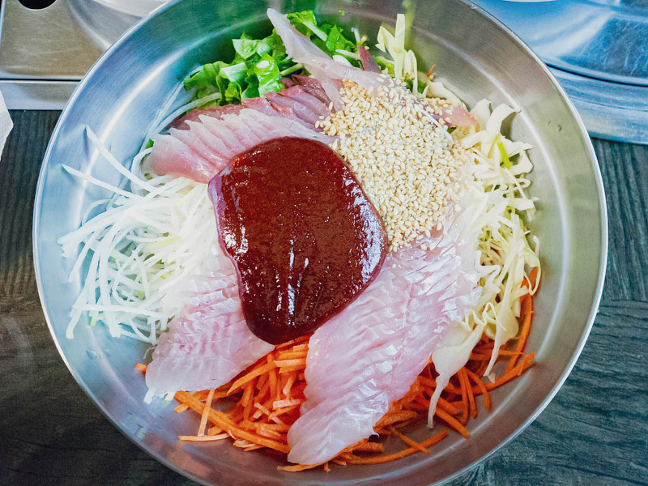
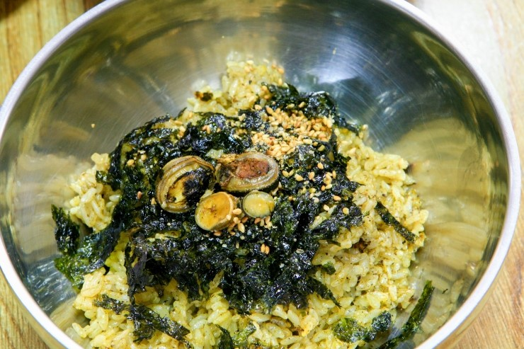
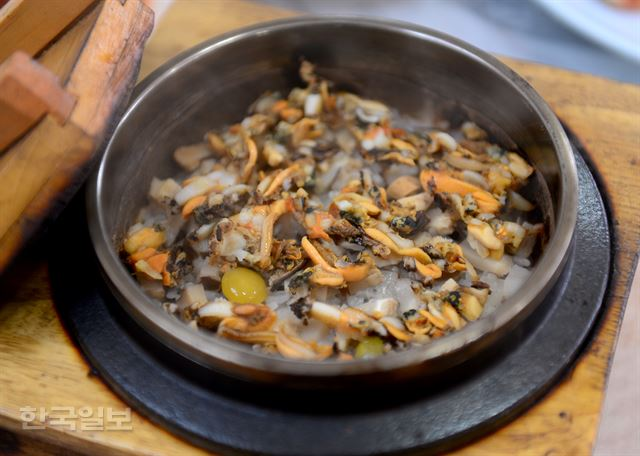
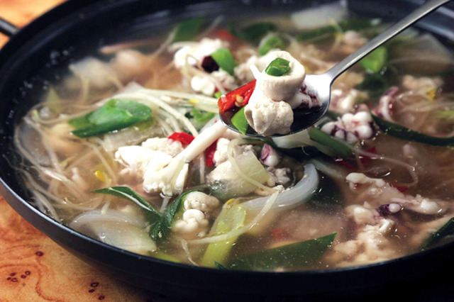

| 꽁치 물회 |
|---|
|  |
| 울릉도에서만 맛볼 수 있는 별미 다. 갓 잡은 꽁치를 바로 포를 떠서 살짝 급랭했다 가 다음 날 배, 상추, 미나리 등을 함께 담는다. 얼 어있다고 해서 냉동이라고 오해하지 마시라. 여기 에 기호에 따라 시원한 양념장을 그릇에 두 국자 또 는 세 국자 부어서 비벼야 한다. 육지 물회와 다르 게 울릉도에서는 양념장을 따로 내어준다. 천천히 순가락 바깥쪽을 활용해 살살 달래가면서 비벽야 만 꽁치와 그 밖의 재료가 잘 버무려진다. 맛은? 꽁 치가 들어가서 그런지 일반 물회보다 더욱 고소하 다. 감칠맛이 2~3배는 뛰어나다. (신비섬 식당, 꽁치물회 1만5000원, 경북 울릉군 울릉읍 울릉순환로 592, 054-791-4460) |
| 따개비 밥/따개비 칼국수 |
|---|
|  |
| 폭 1cm 정도의 회 갈색 분화구 모양의 따개비를 이용해 만든 음식이 다. 해안의 바위, 말뚝 등에 사는 부착생물인데 다 른 여행지에서는 맛볼 수 없는 울등도 별미다. 다 른 지역의 따개비에 비해 크고 육질이 우수해 전복 보다 선호하는 이도 있을 정도다. 옹골차서 씹히는 맛이 일품이고, 칼국수에 들어가면 바다 내음을 담 아낸다. (해돋이 식당, 따개비밥 1만5000원, 따개비 칼국 수 1만원, 경상북도 울릉군 울릉읍 도동리 308-3, 054-791-5100) |
| 홍합밥 |
|---|
|  |
| 수심 깊은 곳에서 해녀가 따온 홍합으 로 만든다. 울릉도 홍합은 크기가 손바닥만큼 큰 데다 무르고 푸석푸석하지 않아 탕이나 구이보다는 밥으로 먹는 게 맛이 좋다. 잘게 선 홍합을 김과 갓 지는 밥에 비벼 먹으면 그야말로 고소함이 이루 말 할 수 없이 빼어나다. (해돋이 식당, 1만5000원) |
| 오징어 내장탕 |
|---|
|  |
| 울릉도 특산물이자 가장 많이 잡히는 어종인 오징어로 만든다. 갓 잡은 팔딱 뛰 는 오징어를 회로 쳐서 소주 한잔 곁들여 먹으면 금 상첨화인데, 다음날 숙취는 바로 오징어 내장탕이 해결해준다. 잘 손질한 오징어 내장은 호박, 콩나 물 등과 함께 끓이다가 풋고추, 홍고추를 송송 썰 어 넣으면 담백하고 시원해 해장국으로 손색이 없다. (해돋이 식당, 1만원) |